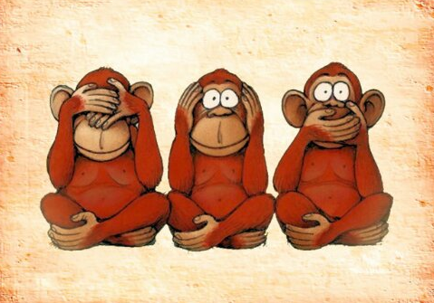
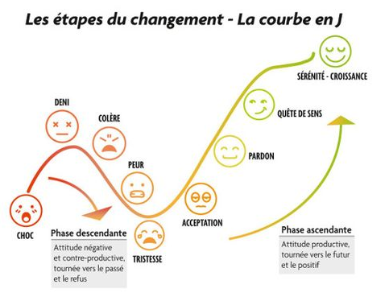
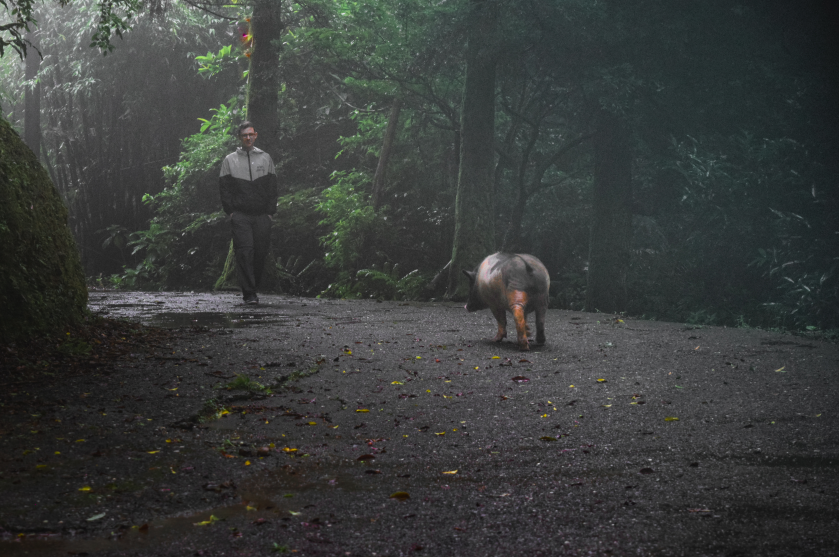

Comment je suis devenu végan
Un ami est devenu vegan. Naturellement, je me suis d'abord moqué.

Puis j'ai entendu. Par la suite, j'ai ecouté. Et me voilà qui pose même quelques questions par-ci par là.
Je me renseigne sur le sort des animaux depuis que l'être humain est devenu un ultra-prédateur. C'est assez flagrant, face à n'importe quelle sorte de faiblesse, on reproduit le même schème : on écrase, on soumet et on exploite. Sans prendre en compte les intérêts qui ne nous sont pas propres.
Je regarde et j'écoute autour de moi ce que l'on pense des animaux. C'est fou : on est presque tous d'accord pour dire que les animaux ne sont pas des objets et que l'on ne devrait pas les traiter comme tels. Pourtant, nous avons réduits tous les animaux à l'état de chose. Notre steak, notre paire de chaussure, notre animal de compagnie, notre divertissement en cage, notre moyen de transport, notre machine à lait ou œufs, notre cobaye, etc…
La prise de conscience va croissante. J'écris une liste des raisons de ne pas être végan selon moi. Les calculs sont faits rapidement. Le boycott des produits issus de l'exploitation animale penche largement en la faveur des animaux et de la planète, comme on pourrait s'en douter. Je vois de moins en moins de raisons de mettre tant d'animaux dans mon assiette, de me vêtir de la peau de cette vache ou de son petit veau, de forcer ce chien à vivre selon mon rythme, de faire tuer ce taureau, d'aller voir ce dauphin en cage. Tout cela n'est plus nécessaire aujourd'hui. La viande, le cuir, le divertissement injuste, on peut s'en passer. Simplement.
S'il s'agirait de ma survie, le choix serait plus difficile certainement. Mais une ceinture en peau de vache, est-elle nécessaire? Ce gros lion dans cette petite cage, est-ce que je vais mourir de ne jamais en avoir vu de si près? Si je ne monte pas sur le dos de ce cheval, ma santé va-t-elle en pâtir?
Ah, la santé. Eh oui, reste la santé. J'ai peur bien sûr. Oui je sais, la majorité des études scientifiques sérieuses (méthode statistique, taille de l'échantillon, robustesse des résultats, etc…) converge et semble faire consensus : un régime végétalien équilibré et accompagné d'un complément en vitamine B12 ne présente pas de risque pour la santé ( Research - Vegan Health ).
Oui, mais. Oui, mais il y a tous ces anciens végans sur Youtube qui perdent leur libido, qui deviennent anorexique ou qui voient leur santé décliner jusqu'à ce qu'un morceau de vache vienne leur redonner force et vigueur. Il y a tous ces gens sur Quora et ailleurs qui jurent que c'est vital de manger des animaux, sans quoi on meurt.
Les statistiques sont parfois peu de chose face à l'émotion. C'est difficile de ne pas douter. Et changer n'est pas simple. Il faut du temps :

Je me décide finalement de tenter l'expérience pendant deux mois d'abord. Pour voir.
La date est choisie : c'est parti !
- - -
Deux mois sont passés. Puis un an. Puis deux. Je suis toujours en bonne santé et je préfère plus que jamais les animaux vivants et libres de nos caprices.


EDIT 2022: Vegan 3 ans, santé impeccable. Toutefois, de retour en France, je suis passé végétarien (en minimisant mon apport en oeuf, lait, etc...). Il ne s'agit pas d'un changement d'idée, au contraire, je suis toujours plus que convaincu de la nécessité de laisser les animaux tranquilles. Toutefois, par égoïsme afin de me faciliter la vie car c'est toujours un peu compliqué socialement d'être vegan en France, j'ai préféré limiter mon boycott à la viande.